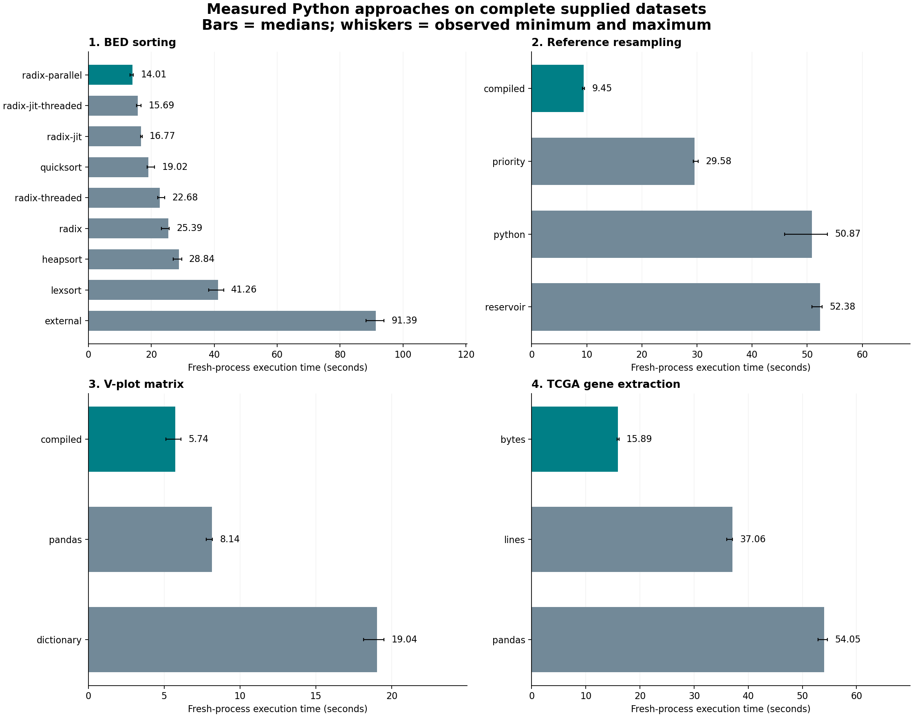
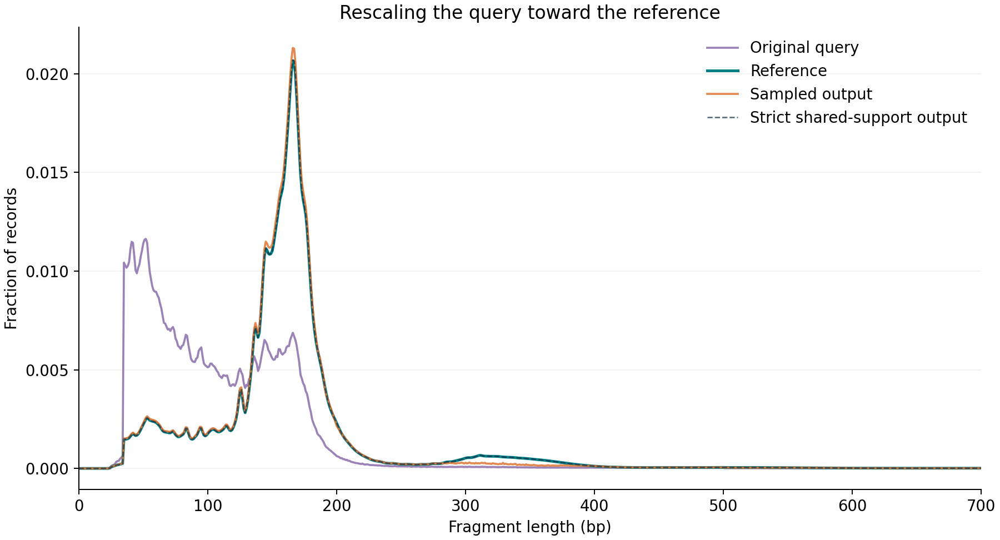
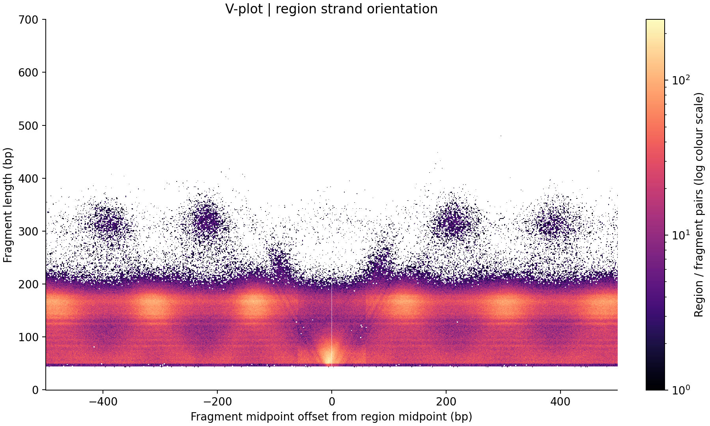
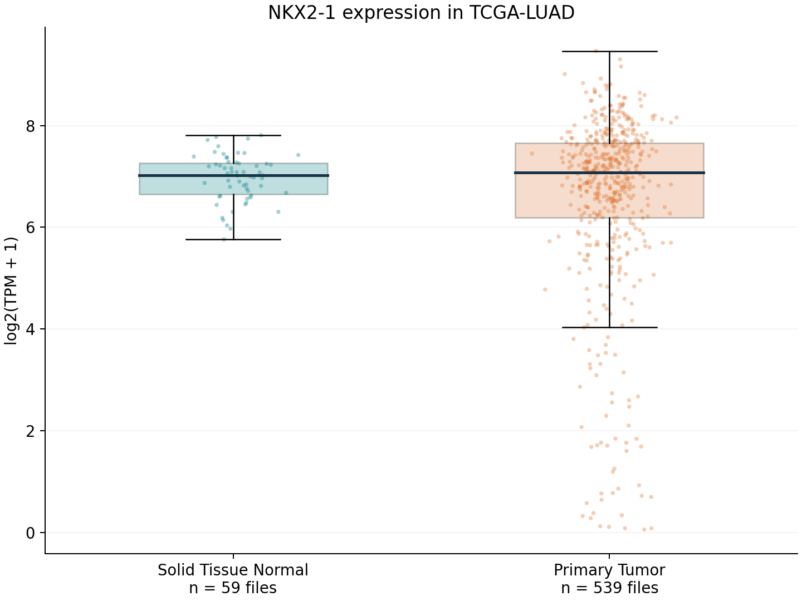
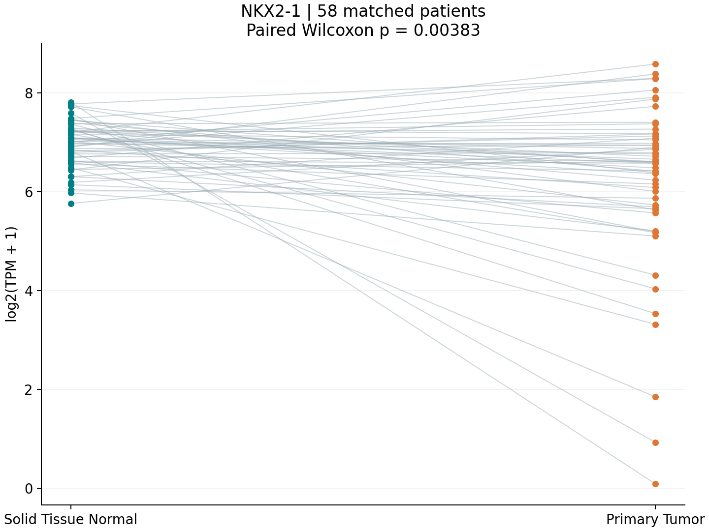

PROJECT 1
BED sorting
14.01 seconds
radix-parallel
Four Python tasks, their timing comparisons, and the resulting plots.
radix-parallel
compiled
compiled
bytes
Median times include program startup, cached Numba loading, reading and writing. Plotting is separate. Disk caches were not cleared. See the report for first-run compilation costs and timing ranges.

| Method | Median | Observed range | Peak RSS |
|---|---|---|---|
| radix-parallel | 14.01 s | 13.21–14.34 s | 1752 MiB |
| radix-jit-threaded | 15.69 s | 15.36–16.75 s | 1752 MiB |
| radix-jit | 16.77 s | 16.55–17.09 s | 1751 MiB |
| quicksort | 19.02 s | 18.74–21.02 s | 1521 MiB |
| radix-threaded | 22.68 s | 22.03–24.28 s | 1513 MiB |
| radix | 25.39 s | 23.23–25.67 s | 1503 MiB |
| heapsort | 28.84 s | 27.03–29.63 s | 1542 MiB |
| lexsort | 41.26 s | 38.20–42.99 s | 1494 MiB |
| external | 91.39 s | 88.17–93.98 s | 132 MiB |
| Method | Median | Observed range | Peak RSS |
|---|---|---|---|
| compiled | 9.45 s | 9.20–9.60 s | 1222 MiB |
| priority | 29.58 s | 29.36–30.24 s | 1410 MiB |
| python | 50.87 s | 45.93–53.68 s | 1330 MiB |
| reservoir | 52.38 s | 50.86–52.75 s | 1217 MiB |
| Method | Median | Observed range | Peak RSS |
|---|---|---|---|
| compiled | 5.74 s | 5.11–6.10 s | 115 MiB |
| pandas | 8.14 s | 7.77–8.18 s | 141 MiB |
| dictionary | 19.04 s | 18.15–19.50 s | 104 MiB |
| Method | Median | Observed range | Peak RSS |
|---|---|---|---|
| bytes | 15.89 s | 15.80–16.14 s | 69 MiB |
| lines | 37.06 s | 36.00–37.10 s | 69 MiB |
| pandas | 54.05 s | 52.87–54.64 s | 111 MiB |
Strict sampling matches the reference more closely; capped sampling keeps more rows.

Each cell counts region/fragment overlaps at one fragment length and midpoint offset.

Descriptive expression-file view; log2(TPM + 1).

Pairing prevents tumor and normal samples from the same patient being treated as independent.
